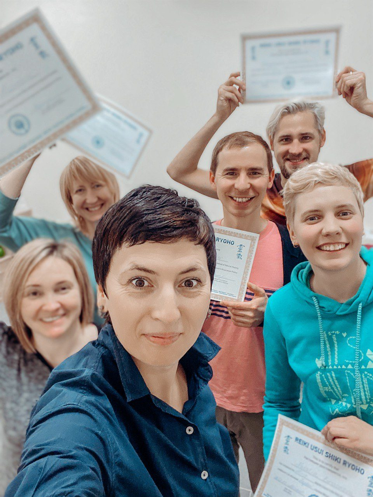
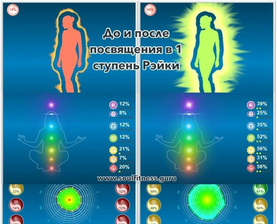

Японская система развития и оздоровления человека. Я обучаю всем ступеням: первой, второй и мастерской. Передаю не только технику, но и состояние, из которого она действительно работает.

Всё, что необходимо современному человеку для самопомощи и работы с близкими.
Открыть страницу семинараСимволы как ключи к состояниям, дистанционная работа, углубление практики.
Открыть страницу семинараРэйки нужно для саморазвития, самопомощи и для работы с другими людьми. Мои семинары и практикумы это не обучение в классическом смысле. Я не передаю методику, я разворачиваю сознание.

До и после посвящения в первую ступень